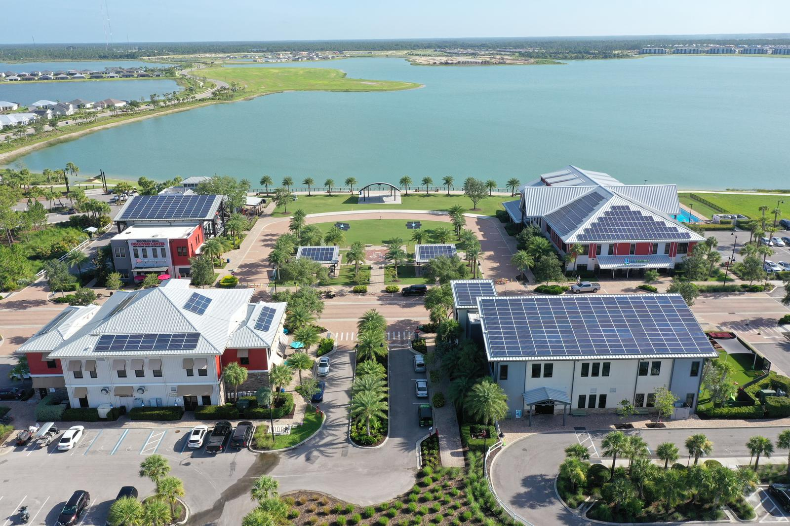
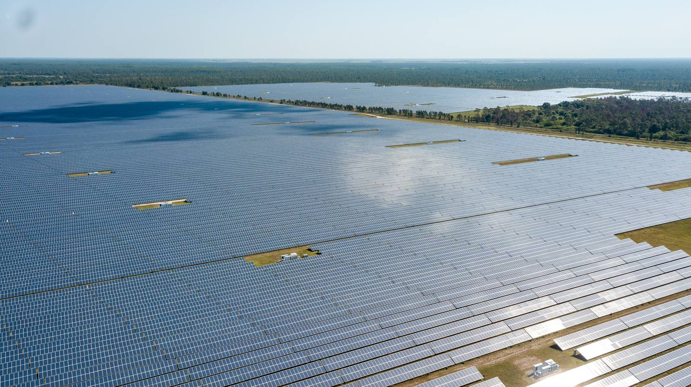

A statewide platform for company building, with a resilience focus at Babcock Ranch.
The inaugural Southwest Florida Resilience Accelerator is part of Ambition Accelerated, the Florida Council of 100's statewide effort to build the next generation of American companies in Florida. Over an eight-week program, participants will be connected directly with CEOs, mentors, customers, and capital.
How the program works →
Meet the founders

Venture 01
Placeholder — one line on the venture.

Venture 02
Placeholder — one line on the venture.

Venture 03
Placeholder — one line on the venture.

Venture 04
Placeholder — one line on the venture.
A featured four. The full cohort of ten lands on the Participants page once it's announced in late September.

Resilience is how we build.
As a presenting partner, Babcock Ranch will host founders and innovators to share what it took to create a solar-powered and resilient town.
Anchoring the new Southwest Florida Resilience Accelerator at Babcock Ranch underscores our vision to be the most sustainable, innovative, and resilient town in America.
Lucienne Pears, VP of Economic and Business Development, Kitson & PartnersCoverage of the program and its founders lands here.
Watch the story unfold.
The latest from the program's social channels, updating automatically.
What is the Southwest Florida Resilience Accelerator?
It's the resilience track of Ambition Accelerated, a statewide initiative from the Florida Council of 100, anchored at Babcock Ranch.
Who takes part?
Ten selected founders make up the inaugural cohort, building climate-resilience technologies and solutions.
When are the Babcock sessions?
Two sessions at Babcock Ranch: October 26–27 and November 19–20, 2026.